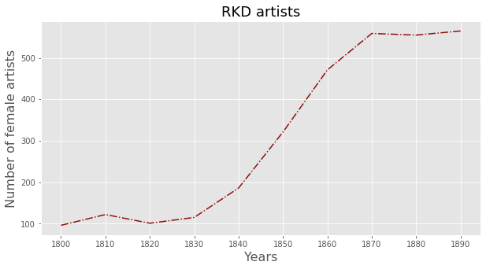

RKD Artists
Contents
RKD Artists#
Number of female artists#
The cell below firstly defined a number of functions that can be used to run SPAQRL queries and to analyse the results in Python.
from SPARQLWrapper import SPARQLWrapper, JSON
from IPython.core.display import display, HTML
import pandas as pd
import re
from IPython.core.display import display, HTML
import ssl
try:
_create_unverified_https_context = ssl._create_unverified_context
except AttributeError:
pass
else:
ssl._create_default_https_context = _create_unverified_https_context
endpoint = 'https://api.data.netwerkdigitaalerfgoed.nl/datasets/rkd/rkdartists/services/rkdartists-jena/sparql'
sparql = SPARQLWrapper(endpoint)
def run_query(sparql_query):
sparql.setQuery(sparql_query)
sparql.setReturnFormat(JSON)
data = sparql.query().convert()
df = pd.json_normalize(data['results']['bindings'])
return df
def print_results(df):
for i,row in df.iterrows():
for column in df.columns:
if re.search('value$' , column):
print( f'{column} => {row[column]}' )
print('-------')
query = """
PREFIX rdf: <http://www.w3.org/1999/02/22-rdf-syntax-ns#>
PREFIX rdfs: <http://www.w3.org/2000/01/rdf-schema#>
PREFIX rkdo: <http://data.rkd.nl/def#>
PREFIX schema: <http://schema.org/>
PREFIX xsd: <http://www.w3.org/2001/XMLSchema#>
SELECT DISTINCT ?id
WHERE {
?id a schema:Person .
}
"""
df = run_query(query)
The RKD database contains descriptions of more than 220,000 people.
print( df.shape[0] )
220793
The RKD Sparql endpoint offers access to an impressive amount of information about artists. The query below requests information about the painter Piet Mondriaan.
from SPARQLWrapper import SPARQLWrapper, JSON
endpoint = 'https://api.data.netwerkdigitaalerfgoed.nl/datasets/rkd/rkdartists/services/rkdartists-jena/sparql'
query = """
PREFIX rdf: <http://www.w3.org/1999/02/22-rdf-syntax-ns#>
PREFIX rdfs: <http://www.w3.org/2000/01/rdf-schema#>
PREFIX rkdo: <http://data.rkd.nl/def#>
PREFIX schema: <http://schema.org/>
prefix wd: <http://www.wikidata.org/entity/>
prefix wdt: <http://www.wikidata.org/prop/direct/>
SELECT ?name ?gender ?nationality ?id ?add ?alternate ?pob ?birth_date
?pod ?death_date ?edu_name ?title ?image ?event ?event_desc ?event_location ?event_lat ?event_long ?event_date
WHERE {
?artist schema:identifier '56854' .
?artist schema:name ?name .
OPTIONAL { ?artist schema:gender ?gender . } .
OPTIONAL { ?artist schema:nationality ?nationality . } .
OPTIONAL { ?artist schema:identifier ?id . } .
OPTIONAL { ?artist schema:additionalType ?add . } .
OPTIONAL { ?artist schema:alternateName ?alternate . } .
?artist rkdo:Birth ?birth .
OPTIONAL { ?birth schema:location ?pob . } .
OPTIONAL { ?birth schema:startDate ?birth_date . } .
?artist rkdo:Death ?death .
OPTIONAL { ?death schema:location ?pod . } .
OPTIONAL { ?death schema:startDate ?death_date . } .
?artist rkdo:Education ?edu .
OPTIONAL { ?edu schema:name ?edu_name. } .
?artist schema:event ?event.
OPTIONAL { ?event schema:description ?event_desc . } .
OPTIONAL { ?event schema:location ?event_location . } .
OPTIONAL { ?event schema:latitude ?event_lat . } .
OPTIONAL { ?event schema:longitude ?event_long . } .
OPTIONAL { ?event schema:startDate ?event_date .} .
service <https://query.wikidata.org/bigdata/namespace/wdq/sparql> {
?work wdt:P31 wd:Q3305213;
wdt:P170 wd:Q151803;
wdt:P18 ?image;
wdt:P1476 ?title;
}
FILTER (lang(?name) = 'nl')
}
"""
df = run_query(query)
---------------------------------------------------------------------------
KeyboardInterrupt Traceback (most recent call last)
/var/folders/nf/35gdwksd0fx8kzbsljz4dz6hnrcnxq/T/ipykernel_78606/2513846669.py in <module>
55 """
56
---> 57 df = run_query(query)
/var/folders/nf/35gdwksd0fx8kzbsljz4dz6hnrcnxq/T/ipykernel_78606/1963656267.py in run_query(sparql_query)
20 sparql.setQuery(sparql_query)
21 sparql.setReturnFormat(JSON)
---> 22 data = sparql.query().convert()
23 df = pd.json_normalize(data['results']['bindings'])
24 return df
/Library/Frameworks/Python.framework/Versions/3.7/lib/python3.7/site-packages/SPARQLWrapper/Wrapper.py in query(self)
958 :rtype: :class:`QueryResult` instance
959 """
--> 960 return QueryResult(self._query())
961
962 def queryAndConvert(self) -> "QueryResult.ConvertResult":
/Library/Frameworks/Python.framework/Versions/3.7/lib/python3.7/site-packages/SPARQLWrapper/Wrapper.py in _query(self)
924 response = urlopener(request, timeout=self.timeout)
925 else:
--> 926 response = urlopener(request)
927 return response, self.returnFormat
928 except urllib.error.HTTPError as e:
/Library/Frameworks/Python.framework/Versions/3.7/lib/python3.7/urllib/request.py in urlopen(url, data, timeout, cafile, capath, cadefault, context)
220 else:
221 opener = _opener
--> 222 return opener.open(url, data, timeout)
223
224 def install_opener(opener):
/Library/Frameworks/Python.framework/Versions/3.7/lib/python3.7/urllib/request.py in open(self, fullurl, data, timeout)
523 req = meth(req)
524
--> 525 response = self._open(req, data)
526
527 # post-process response
/Library/Frameworks/Python.framework/Versions/3.7/lib/python3.7/urllib/request.py in _open(self, req, data)
541 protocol = req.type
542 result = self._call_chain(self.handle_open, protocol, protocol +
--> 543 '_open', req)
544 if result:
545 return result
/Library/Frameworks/Python.framework/Versions/3.7/lib/python3.7/urllib/request.py in _call_chain(self, chain, kind, meth_name, *args)
501 for handler in handlers:
502 func = getattr(handler, meth_name)
--> 503 result = func(*args)
504 if result is not None:
505 return result
/Library/Frameworks/Python.framework/Versions/3.7/lib/python3.7/urllib/request.py in https_open(self, req)
1391 def https_open(self, req):
1392 return self.do_open(http.client.HTTPSConnection, req,
-> 1393 context=self._context, check_hostname=self._check_hostname)
1394
1395 https_request = AbstractHTTPHandler.do_request_
/Library/Frameworks/Python.framework/Versions/3.7/lib/python3.7/urllib/request.py in do_open(self, http_class, req, **http_conn_args)
1351 except OSError as err: # timeout error
1352 raise URLError(err)
-> 1353 r = h.getresponse()
1354 except:
1355 h.close()
/Library/Frameworks/Python.framework/Versions/3.7/lib/python3.7/http/client.py in getresponse(self)
1367 try:
1368 try:
-> 1369 response.begin()
1370 except ConnectionError:
1371 self.close()
/Library/Frameworks/Python.framework/Versions/3.7/lib/python3.7/http/client.py in begin(self)
308 # read until we get a non-100 response
309 while True:
--> 310 version, status, reason = self._read_status()
311 if status != CONTINUE:
312 break
/Library/Frameworks/Python.framework/Versions/3.7/lib/python3.7/http/client.py in _read_status(self)
269
270 def _read_status(self):
--> 271 line = str(self.fp.readline(_MAXLINE + 1), "iso-8859-1")
272 if len(line) > _MAXLINE:
273 raise LineTooLong("status line")
/Library/Frameworks/Python.framework/Versions/3.7/lib/python3.7/socket.py in readinto(self, b)
587 while True:
588 try:
--> 589 return self._sock.recv_into(b)
590 except timeout:
591 self._timeout_occurred = True
/Library/Frameworks/Python.framework/Versions/3.7/lib/python3.7/ssl.py in recv_into(self, buffer, nbytes, flags)
1069 "non-zero flags not allowed in calls to recv_into() on %s" %
1070 self.__class__)
-> 1071 return self.read(nbytes, buffer)
1072 else:
1073 return super().recv_into(buffer, nbytes, flags)
/Library/Frameworks/Python.framework/Versions/3.7/lib/python3.7/ssl.py in read(self, len, buffer)
927 try:
928 if buffer is not None:
--> 929 return self._sslobj.read(len, buffer)
930 else:
931 return self._sslobj.read(len)
KeyboardInterrupt:
import pandas as pd
import numpy as np
first = df.iloc[0]
print( f"Name: {first['name.value']}" )
print( f"https://rkd.nl/nl/explore/artists/{first['id.value']}" )
print( f"\nGender: {first['gender.value'][first['gender.value'].rindex('/')+1:]}" )
print( f"Date of birth: {first['birth_date.value']}" )
print( f"Date of death: {first['death_date.value']}" )
print('\nAlternative names:')
names = df['alternate.value']
for name in names.drop_duplicates().values:
print(name)
print('\nEducation:')
edu = df['edu_name.value']
for education in edu.drop_duplicates().values:
print(education)
print('\nEvents:')
df['event_duplicated'] = df.duplicated(subset='event_desc.value', keep='first')
events = df[ df['event_duplicated'] == False ]
events = events.sort_values('event_date.value')
for i,row in events.iterrows():
print( f"{row['event_date.value']}\n{row['event_desc.value']} ")
print('\nWorks:')
df['works_duplicated'] = df.duplicated(subset='title.value', keep='first')
works = df[ df['works_duplicated'] == False ]
for i,row in works.iterrows():
print( f"{row['title.value']}\n")
display(HTML(f'<img src="{row["image.value"]}" style="width: 200px; " />'))
Name: Mondriaan, Piet
https://rkd.nl/nl/explore/artists/56854
Gender: Male
Date of birth: 1872-03-07
Date of death: 1944-02-01
Alternative names:
Mondrian, Piet
Mondriaan, Pieter Cornelis
Education:
Rijksakademie van beeldende kunsten (Amsterdam)
Events:
1908
nan
1909
also West-Kapelle
1911
visits Paris for ten days in mid-June (Bois 1994)
1912-03
lives at avenue du Maine 33 (Bois 1994)
1912-05
lives at rue du Départ 26 (Bois 1994)
1919-06-22
due to finding his old studio at 26 rue du Départ occupied by Tour Dones, moves into the vacant studio Kickert had occupied briefly in 1912 in the same building (Bois 1994)
1919-11-01
moves to a new studio at rue de Coulmiers 5 (Bois 1994)
1921-10-22
returns to rue du Départ, where he occupies the larger studio of the Stieltjes (Bois 1994)
1936-03-20
moves into new quarters in the studio building at boulevard Raspail 278 (Bois 1994)
Works:
Composition C

Composition with red, blue, black, yellow and gray

Tableau I

Trafalgar Square

Windmill with Summerhouse II

Composition with color planes 2

Grazende kalfjes

Zomernacht

Oostzijdse molen in maanlicht

Composition

Tableau No. IV; Lozenge Composition with Red, Gray, Blue, Yellow, and Black

Farm near Duivendrecht

Composition (No. 1) Gray-Red

Composition with Blue, Yellow, and Red

Schilderij No. 1

Composition - blanc, rouge et jaune: A

Composition with Blue, Red, Yellow, and Black

Composition with Blue and Red

Red Gladioli

Irises

Geschoten haas

Composition no.XIII (authentic)

Composition en couleurs

Three chrysanthemum blossoms

Portrait of Egbert Kuipers (1828-1892)

Portret van Egbert Kuipers (1828-1892)
Portrait of Egbert Kuipers (1828-1892) and Jantje Wiegersma (1828-...)

Portret van Egbert Kuipers (1828-1892) en Jantje Wiegersma (1828-...)
Female head in profile

The four seasons

Girl looking to her left

Farm interior with woman peeling potatoes

Windmill in sunlight near a stream

Haystack and farm sheds in a field

Haystack with willow trees

Small house along a canal

Three Italian poplars and buildings

Goats grazing near buildings

House in the countryside

Farm sheds and haystacks in the dunes

Farm building near Laren

Farmstead in Het Gooi with three buildings

Small farm buildings in Het Gooi

Farm building in Het Gooi, viewed from a field

Farm buildings in Het Gooi, veiled by trees

Farmyard in Het Gooi flanked by saplings

Shipworks

Scheepstimmerwerf (authentiek)
Lange Bleekerssloot with tower of the West Church

Lange Bleekerssloot with barge

Lange Bleekerssloot: view toward the Kostverlorenvaart

Houses and paltrok mill on the Voorweg

Footbridge in the Schinkelbuurt

Factory district near the Boerenwetering

U

Unloading a sand barge
Moored barge with horses

Irrigation ditch with mature willow

Polder landscape with irrigation ditch

Polder landscape with irrigation ditch and fence

Polder landscape with irrigation ditch and five cows

Fox Trot A
By the Sea

Composition (no. III) blanc-jaune

New York City 2 (unfinished)

Church at Zoutelande, three-quarter view

Beach with five piers at Domburg

Rear gable of an Achterhoek farm building

Willow suspended over the water before farm building and church tower

Composition II ; Composition 2 avec rouge et bleu

Composition en rouge, bleu et blanc II
Field with Young Trees in the Foreground

Victory Boogie Woogie

Compositie in lijn

Gemälde no.I

Molen aan 't Gein

Broadway Boogie Woogie

grande composizione A con nero, rosso, grigio, giallo e blu

De rode boom

De grijze boom

Tableau I (Schilderij I)

Composition with Yellow, Blue and Red

Composition with yellow, black, blue, red, and gray

Open landscape, train along the horizon

Oostzijdse Mill along the River Gein by Moonlight

Oostzijdse molen aan het Gein bij maanlicht
Composition: No. III, with Red, Yellow, and Blue

Compositie: no. III, met rood, geel en blauw
Apple Tree, Pointillist Version

Composition with Large Blue Plane, Red, Black, Yellow, and Gray

Windmill

Farm Near Duivendrecht, in the Evening

Composition no. XVI (authentic)

Vuurtoren bij Westkapelle

Evolutie

Stilleven met gemberpot 2

Molen; Molen bij zonlicht

Molen bij Domburg

Molen; De rode molen

Bomen aan het Gein: opkomende maan

Devotie

Bosch; Bos bij Oele

Kerk te Domburg

Zeeuwsche kerktoren

Metamorfose

Compositie met groot rood vlak, geel, zwart, grijs en blauw

Tableau no. 2

New York City

Composition with grid 1

Composition in oval with color planes 1

View from the dunes with beach and piers, Domburg

Post mill at Heeswijk, rear view

Composition - blanc et rouge: B

Composition with grid 4

Composition no. 10

Composition with color planes and gray lines 1

Oostzijdse mill with panoramic sunset and brightly reflected colors

Lozenge Composition with Yellow, Black, Blue, Red, and Gray

Windmolen

Stammer Mill with Streaked Sky

Portret van Pieter Cornelis Mondriaan (1872-1944)

Portrait of Pieter Cornelis Mondriaan (1872-1944)
Zelfportret

Rastercompositie 9: dambordcompositie heldere kleuren

Composition with red, blue and yellow

Compositie 10 in zwart wit

Duin III

Brabant farm building and shed

Zomer, duin in Zeeland

Stilleven met gemberpot 1

Composition no. III

Compositie

Tableau 2

Composition no. I

Composition no. 1

Truncated view of the Broekzijder mill on the Gein, wings facing west

Gemälde no. II

Compositie no.5

Compositie met rood, blauw, zwart, geel en grijs

Boerderij

Kopie naar de Pietà van Villeneuve-Lès-Avignon door Enguerrand Quarton

Oostzijdse molen

Boerderij Landzicht

Duinen bij Domburg

Compositie met rood, zwart, geel, blauw en grijs

Zee na zonsondergang

Huisje bij zon

De rode wolk

Slootje bij boerderij Landzicht

Op het land

Avond aan het Gein

Portret van D.J. Hulshoff Pol

Portret van J.P.G. Hulshoff Pol

Avondlandschap

Boerderij met boerin aan de was

Knotwilgenbosje langs het Gein

Eenzame boom aan het Gein

Compositie no. 3 met kleurvakjes

Boerderij aan een sloot met bomen

Compositie met gele lijnen

Boomgaard met kippen

Groot landschap

Avondlandschap aan het Gein

Landschap met bomen aan het Gein

Molen achter hoge bomen

Gezicht op de Schinkelbuurt

Het Gein: Bomen aan het water

Duin IV

Compositie met rood, geel, zwart, blauw en grijs

Boerderij met bomen

Weidelandschap met koeien

Boerderij, Brabant

Dorpsgezicht

Avond

De Kostverlorenvaart

Twee chrysanten

Wilgen aan het Gein

Baggermolen

Weide met koeien

Bos

Bloeiende bomen

Landweg met huizen

Studie naar twee koeien

Mijmering

Roodbonte vaars in de weide

Twee figuren

Vrouwen met kind voor boerderij

Sloot met twee wilgen

Boerenhoeve aan een sloot

Bij de ossenstal

Schuur te Nistelrode

Het Gein: bomen aan het water

Boerderijen met op de voorgrond een hek

Huis aan het water met vrouw aan de was

Avondlandschap met koeien

De Koninklijke Waskaarsenfabriek

De Boerenwetering

Boerderij met wilgen aan het Gein

Bleekerij aan het Gein

Boerderij tussen eikenbomen

Wilgenbosje

Tableau No. 3: Composition in Oval

Tableau no. 3: compositie in ovaal
Stilleven met haringen

Still Life with Herrings
Painting No. II / Composition No. XV / Composition 4

Schilderij no. II / Compositie no. XV / Compositie 4
Composition with Yellow, Red, Black, Blue, and Gray

Compositie met geel, rood, zwart, blauw en grijs
kaka

Composition No.IV, with Red, Blue, and Yellow
Farm Setting, Four Tall Trees in the Foreground I

Boerderij met vier hoge bomen in de voorgrond I
Composition with Blue, Yellow, Red, Black, and Gray

Compositie met blauw, geel, rood, zwart en grijs
Lozenge Composition with Two Lines

Ruitvormige compositie met twee lijnen
Willow grove, trunks leaning left I

Still life with a plaster bust

Mannelijk naakt

Willow grove with prominent trunk at center

Sun, Church in Zeeland; Zoutelande Church Facade

Composition B (No.II) with Red

No. VI / Composition No.II

Composition no. II

The trees

Farmstead under oak trees II

Fox Trot B, with Black, Red, Blue, and Yellow

Post mill at Heeswijk, side view

Landscape with three reclining cows

Landschap bij Uden

Portrait of Cornelis Bergman (c. 1903-...)

Portret van Cornelis Bergman (c. 1903-...)
Stammer mill with summer house

Broekzijder mill in the evening

Oostzijdse mill viewed from downstream with streaked pinkish-blue sky

Oostzijdse mill from downstream with evenly streaked sky

Oostzijdse mill with streaked reddish sky

Oostzijdse mill with extended light blue, yellow and violet sky

Oostzijdse mill, vertical oil sketch with blue sky

Oostzijdse mill with cropped wings

Oostzijdse mill with panoramic sunset, mill at center

Oostzijdse mill with panoramic sunset, mill at right

Panoramic sunset with two windmills

Windmill near tall trees, other trees at right

Windmill near tall trees with woman at the wash stoop

Windmill with tall trees and moored barges

Landzicht farm under light blue sky

Haystacks III

Mand met appelen

Still Life with Sunflower

Composition with Red, Blue, Yellow, Black, and Gray

Het Zeeuws meisje

Ships in the moonlight

Schepen in het maanlicht
Church seen from the rear

Gezicht op de achterzijde van een kerk
Pitcher with onions

Kan met uijen (authentiek)
Thy word is the truth

Uw woord is de waarheid (authentiek)
Puppy

Farm interior with hearth in the Achterhoek

Boereninterieur met haard in de Achterhoek
Aardappelschillende vrouw

Woman peeling potatoes
Woman with spindle

Vrouw met spindel
Lane with sheaves of rye

Laan met roggeschoven
D

Schemering
Brook with sluice near Winterswijk

Beek met sluis bij Winterswijk
Warmth

Warmte (authentiek)
Stream bordered by wooded landscape

Boslandschap met beek
Achterhoek farmhouse with haystack

Boerderij met hooimijt in de Achterhoek
Portrait of Dorothy Gretchen Biersteker (1891-1978)

Portret van Dorothy Gretchen Biersteker (1891-1978)
Portrait of Queen Wilhelmina (1880-1962) as a princes

Princesje (authentiek)
Women doing the wash

Vrouwen aan de was
Field with church tower and haystack

Landschap met kerktoren en hooiberg
Irrigation ditch with wood gate at left

Polderlandschap met sloot en houten hek
Irrigation ditch, bridge and goat, sketch

Polderlandschap met brug en geit, schets
Waalseilandsgracht with bridge and moored tjalk barges

Waalseilandsgracht met brug en afgemeerde tjalken
Waalseilandgracht with bridge and flat barges

Waalseilandgracht met brug en platbodems
Farm buildings with trees and water ditch

Boerderijen met bomen en sloot
Scattered trees on sloping land

Glooiend landschap met bomen
Trees and cows along a stream

Trees and cows in a field

Wood near Driebergen

T

Three farm workers near a gateway
Spring idyll

Lente idylle (authentiek)
The Lappenbrink, view toward the Nieuwstraat, oil sketch

Near the Lappenbrink

Farm buildings in Winterswijk

Farmyard in the Achterhoek

Farm buildings with bridge

Farmyard with carriage barn in the Achterhoek

Winter landscape with three farm buildings

Fields with stacked sheaves of rye

Two girls in a wood

Study of apples

Appelstudie (authentiek)
Apples, coffee pot and large copper pan

Still life: apples, pot with flowers and metal pan

Stilleven (authentiek)
Oranges and decorated plate

Sinaasappelen (authentiek)
White phloxes

Witte floxen
Yellow chrysanthemums in a ginger pot

Three chrysanthemum blossoms in a round pot

Polder landscape with group of five cows

Two trees silhouetted behind a water course

Farm setting with foreground tree and irrigation ditch

Free impression of a polder landscape

Polder with moored boat near Amsterdam I

Polder with moored boat near Amsterdam II

Polder landscape, smoke rising in background

Fragment of an irrigation ditch

Irrigation ditch with pollarded willows

Beach scene

Rocky coast in England

House on the Gein, 1741

House on the Gein, 1741, reversed sketch

Façade of Maria's Hoeve farm building on the Gein

Gabled farmhouse façade in white

Gabled farmhouse façade with large gateposts

Two gabled house façades along a canal

Truncated view of a gabled house façade on a canal

Farmhouse with garden

Farm buildings near a canal with small boat

Truncated view of tjalk and house façade

Still life with mirror, containers, honesty and fruit

Portrait of Louise Charlotte Mathilde van den Bosch (1843-1907)

Portret van Louise Charlotte Mathilde van den Bosch (1843-1907)
Windmill with church towers in the distance

Vinkenbrug te Diemen

Curved irrigation ditch bordering farmyard with flowering trees

Fields overlooking Arnhem from the north

Roadway and farm building near Arnhem

Six young birch trees in a field

On the Ringdijk, Watergraafsmeer

Op de Ringdijk, Watergraafsmeer (authentiek)
Farm building with white side façade

Farmhouse façade with curb roof

Gabled farmhouse façade with tree, fence and gateposts in front

Gabled farmhouse with row of trees and blue sky

Buildings along the water with a wash stoop

Irrigation ditch with cows and sheltered farm complex

Farmyard with sheep

Barn and haystack behind row of willows

Farmyard sketch with pollarded willow at left

Farmyard sketch with two cows grazing

Willows bordering a watercourse, buildings left and right

Willows bordering an irrigation ditch near a haystack

The white bull calf

Oostzijdse mill viewed from dock at Landzicht farm

Oostzijdse mill, oil sketch in square format

Farmhouse along the water shielded by arch of trees II

Willow grove, trunks leaning left II

The home: Hannes van Nistelrode at his pot stove

De Herd (authentiek)
Brabant farm building with pump

White irises against a light blue background II

Haystacks I

Haystacks II

Row of eleven poplars in red, yellow, blue and green

Two trees with orange foliage against blue sky

Blue willow tree I

Blue willow tree II

Apple tree in blue with wavy lines I

Apple tree in blue with wavy lines II

Oil sketch for blue apple tree series

Apple tree in blue

House façade with green trimmed shutters

Beach with one pier at Domburg

Pointillist dune study, crest at left

Pointillist study with dunes and sea

New York City 3 (unfinished)

Zwartbonte vaars in de weide

Bloeiende appelboom

Apple Tree in Bloom
Boerderij met wasgoed aan de lijn

Chrysanthemum

Tableau 3

Composition with grid 5: lozenge composition with colors

Rastercompositie 8: dambordcompositie donkere kleuren

Composition B

Composition en blanc et noir II

Composition no.II

Composition no.VI

Composition No. IV (Compositie No. IV) / Compositie 6

Compositie bomen 2

Composition de lignes et couleur: III (Compositie met lijnen en met kleur: III)

Compositie in kleur B

Composition with grid 6

Composition no. 9

Composition en blanc, rouge et bleu

Composition with grid 7

Duin I

Boerderij met hooiberg

Tree

Compositie met grijze lijnen

New York City 1 (unfinished)

New York

Kindje

Spring Sun (Lentezon): Castle Ruin: Brederode

Tableau III: Composition in Oval

Tableau III: compositie in ovaal
:0

Arbre

The Tree A
The Winkel Mill, Pointillist Version

Rose in a glass

Willow Grove: Impression of Light and Shadow

Tableau no. III

Tableau no. 1

Beach with three or four piers at Domburg

Compositie in kleur A

Farm near Duivendrecht, in the evening

Composition no.XI (authentic)

Composition no.XI (authentiek)
Landzicht farm

Wilgen met zon (studie olieverf)

Koeien in de wei

Landschap bij maanlicht

Ven bij Saasveld

Korenschoven in het veld

Boerderij bij Duivendrecht

Boerderij in de avond

Isar Harlemia

Veld met bomen bij avond

Het Singel, Amsterdam

Onderschildering voor land en lucht

Boerderij te Blaricum

Werf te Durgerdam

Bomen langs het Gein

Avondstemming aan de Amstel (De Omval)

Vrouw bij boerderij

Onderschildering voor avondlandschap

Veld met bomengroep bij avond II

Schaapskooi in de avond

Veld met bomengroep bij avond I

Boerderij Geinrust in de nevel

Stervende zonnebloem I

Stervende zonnebloem II

Zeegezicht

Duin II

Aäronskelk; Blauwe bloem

Aäronskelken

Zeeuwsche boer

Kerk te Oostkapelle

Duinlandschap

Paysage (Landschap)

Landschap met bomen

Portret van een dame

Het grote naakt

Compositie bomen 1

Tableau No. 4 (Schilderij No. 4) / Composition No.VIII / Compositie 3

Compositie in ovaal met kleurvlakken 2

Molen bij avond

Polder landscape with irrigation ditch and two cows

Brabant barn interior

Stier

Gezicht op een rij huizen met een landweg

Sloot met brug

Knotwilgen

Boom

Twee aronskelken

Geinrust farm with three small trees at left

Geinrust farm with truncated tall trees and saplings

Geinrust farm surrounded by dense foliage

Geinrust farm with isolated tree at left

Isolated tree on the Gein with yellow-orange sky

Isolated tree on the Gein with gray sky

Isolated tree on the Gein: detail study

Willow grove near the water with chickens

Bend in the Gein with poplars II

Bend in the Gein with poplars, three isolated

Bend in the Gein with poplars

Bend in the Gein with row of eleven poplars I

Bend in the Gein with row of eleven poplars III

Farmstead with long row of trees on the Gein

Farmstead on the Gein screened by tall trees with streaked sky

Farmstead on the Gein screened by tall trees: ultramarine sky with yellow ray of sunset

Landscape with appel tree at left

Landscape with apple tree at left: winter landscape

Meandering river, windmill in the distance

Sailboat moored in a river

Landscape with pink cloud

Farm buildings in white and red near a green field

Farm setting, four tall trees in the foreground II

Summer night: preliminary study in oil

Moored tjalk and other barges

Moored tjalk in purple

Moored tjalk

On Ouderkerkerdijk near the Omval in the evening II

Mooring docks near the Omval

Dredge III

Farmstead under oak trees III

Farmstead façade with leafless oak

Farmhouse façade with well boom at left

Farm building and well

Sheepfold with flock of sheep

Farm building with well in daylight

Fen near Saasveld

Two haystacks in a field I

Evening

Avond (authentiek)
Evening sky with luminous cloud streaks

Field with row of trees at left

Field with gate and trees at right

Silhouette of a spreading tree

Magnolia

Anemones in a vase

Red chryanthemum on blue background

Foxtail lily

Flower arrangement with rhodondendrons and irises

White irises against a light blue background I

Eucalyptus (authentic)

The sea

Flowering trees

Bloeiende bomen (authentiek)
Eucalyptus

Eucalyptus (authentiek)
Composition no. X (authentic)

Tableau no.I

Composition with color planes: façade

Color study with pink, blue, yellow and white

Composition with color planes 4

Composition with color planes and gray lines 2

Composition with color planes and gray lines 3

Composition no. 15

Composition I

Composition II

Composition III

Unfinished composition

Tableau no. I

Composition with yellow, blue, black, red, and gray

Composition with large yellow plane

Composition with large red plane

Composition with large red plane, black, blue, yellow and gray

Tableau no. II

Composition with large red plane, blue, gray, black and yellow

Tableau II

Composition with blue, yellow, red and gray

Composition with Blue, Black, Yellow, and Red

Tableau no. V

Composition with blue, red, yellow, and black

Composition with yellow, blue, and blue-white

Composition with large red plane, bluish gray, yellow, black, and blue

Composition with blue, yellow, black, and red

Compostion with red, black, yellow, blue, and gray

Composition 1922

Tableau

Tableau no. IV

Tableau no. VIII

Tableau no. XI

Composition with red, black, blue, and yellow

Rythme de lignes droites (et couleur?)

Composition no. 7

Composition no. 11

On a river bank

Aan de oever
Portrait of Martha Frieda de Fries (1893-...)

Portret van Martha Frieda de Fries (1893-...)
Portrait of a woman in a yellow hat

Meisje met geel hoedje
Landweg met boerderij

Country road and farm
Landweg

Country road
Portrait of a little boy

Klein Jantje
Ceiling decoration of putti and birds

Plafondschildering met putti en vogels
Haystack behind trees

Hooimijt achter een rij bomen
Farmstead with willows on the water

Boerderij met wilgen aan het water
Farm along the river Gein

Boerderij langs 't Gein
Oostzijdse mill

A farmhouse behind a fence

Willow grove with boats near the river Gein

Cows beside the water (copy after Stortenbeker)

Koeien bij het water (kopie naar Stortenbeker)
The query below selects all artists from the 19th century.
query = """
PREFIX rdf: <http://www.w3.org/1999/02/22-rdf-syntax-ns#>
PREFIX rdfs: <http://www.w3.org/2000/01/rdf-schema#>
PREFIX rkdo: <http://data.rkd.nl/def#>
PREFIX schema: <http://schema.org/>
PREFIX xsd: <http://www.w3.org/2001/XMLSchema#>
SELECT ?id ?name ?gender ?date_birth ?date_death
WHERE {
?id a schema:Person .
?id schema:name ?name .
?id rkdo:Birth ?birth .
?id schema:gender ?gender .
OPTIONAL {
?birth schema:startDate ?date_birth . } .
?id rkdo:Death ?death .
OPTIONAL {
?death schema:startDate ?date_death . } .
FILTER ( ?date_birth >= "1800-01-01"^^xsd:date && ?date_birth < "1900-01-01"^^xsd:date)
}
ORDER BY ?name
"""
df = run_query(query)
The query returns the names of 31623 artists.
df = df.drop_duplicates(subset=['id.value'])
print( df.shape[0] )
31623
query = """
PREFIX rdf: <http://www.w3.org/1999/02/22-rdf-syntax-ns#>
PREFIX rdfs: <http://www.w3.org/2000/01/rdf-schema#>
PREFIX rkdo: <http://data.rkd.nl/def#>
PREFIX schema: <http://schema.org/>
PREFIX xsd: <http://www.w3.org/2001/XMLSchema#>
SELECT ?id ?name ?gender ?date_birth ?date_death
WHERE {
?id a schema:Person .
?id schema:name ?name .
?id schema:gender ?gender .
?id rkdo:Birth ?birth .
OPTIONAL {
?birth schema:startDate ?date_birth . } .
?id rkdo:Death ?death .
OPTIONAL {
?death schema:startDate ?date_death . } .
FILTER ( ?date_birth >= "1700-01-01"^^xsd:date && ?date_birth < "1800-01-01"^^xsd:date)
}
ORDER BY ?name
"""
df = run_query(query)
The RKD database 4857 artists who were born in the 18th century.
df = df.drop_duplicates(subset=['id.value'])
print( df.shape[0] )
4857
df.shape[0]
4857
import pandas as pd
import numpy as np
female = df[ df['gender.value'] == 'http://schema.org/Female']
male = df[ df['gender.value'] == 'http://schema.org/Male']
print( f'Out of the {df.shape[0]} artists born in the 18th century, {female.shape[0]} are female and {male.shape[0]} are male.' )
Out of the 4857 artists born in the 18th century, 280 are female and 4577 are male.
The names of the female artists from the 18th century are as follows:
max = 20
female.reset_index(drop=True)
for index,row in female.iterrows():
print(row['name.value'])
print(row['id.value'] , end='\n\n')
if index == max:
break
Anna Pavlovna of Russia
https://data.rkd.nl/artists/60896
Catherine the Great
https://data.rkd.nl/artists/440104
Charlotte of Mecklenburg-Strelitz (Queen of Great-Britain and Hanover)
https://data.rkd.nl/artists/487057
Czartoryska (née Fleming), Izabela Dorota (Princess)
https://data.rkd.nl/artists/457810
Maria Theresa of Austria
https://data.rkd.nl/artists/52596
Wilhelmina of Pruissia (Queen of the Netherlands)
https://data.rkd.nl/artists/368338
Abesch, Anna Barbara
https://data.rkd.nl/artists/204
Aerssen, Josina Anna Petronella van
https://data.rkd.nl/artists/359913
Alberda van Ekenstein, Anna Josina Petronella
https://data.rkd.nl/artists/471535
Alderwerelt, Sara Maria Helena van
https://data.rkd.nl/artists/427702
Alphen, Petronella Cornelia van
https://data.rkd.nl/artists/353886
Ancelot, Marguerite Virginie
https://data.rkd.nl/artists/1602
Anhalt-Dessau, Henriette Amalie von
https://data.rkd.nl/artists/440391
Anna Amalia van Brunswijk (hertogin van Saksen-Weimar-Eisenach)
https://data.rkd.nl/artists/431734
Anna van Hannover
https://data.rkd.nl/artists/267120
Apell, Amalie
https://data.rkd.nl/artists/77621
Augusta (Princess of Prussia)
https://data.rkd.nl/artists/2948
Auzou-Desmarquets, Pauline
https://data.rkd.nl/artists/3040
Bansi, Barbara
https://data.rkd.nl/artists/483753
Bardua, Caroline
https://data.rkd.nl/artists/4404
Barkhaus-Wieshütten, Charlotte von
https://data.rkd.nl/artists/487911
Barnard, Anne (Lady)
https://data.rkd.nl/artists/368813
Barry, Jeanne du (comtesse)
https://data.rkd.nl/artists/440850
Bartholomew, Valentine
https://data.rkd.nl/artists/4758
Basseporte, Madeleine Françoise
https://data.rkd.nl/artists/98397
Beauclerk, Lady Diana
https://data.rkd.nl/artists/5337
Beauharnais, Joséphine de
https://data.rkd.nl/artists/459191
Beelaerts, Petronella Maria Elisabeth
https://data.rkd.nl/artists/361619
Behr, Theodora Hermina
https://data.rkd.nl/artists/361421
Benoist, Marie-Guilhelmine
https://data.rkd.nl/artists/6584
Berg, Agatha Catharina
https://data.rkd.nl/artists/339405
Bichelberger, Maria Catharina Sophia
https://data.rkd.nl/artists/301883
Bisi Legnani, Ernesta
https://data.rkd.nl/artists/8623
Blarenberghe, Diane-Hélène
https://data.rkd.nl/artists/325067
Blijdenstein, Johanna
https://data.rkd.nl/artists/362330
Blommestein, Anna Jacoba van
https://data.rkd.nl/artists/362323
Boellaard, Margaretha Cornelia
https://data.rkd.nl/artists/9661
Boizot, Marie-Louise Adélaïde
https://data.rkd.nl/artists/374764
Bonvoisin, Catherine Hélie
https://data.rkd.nl/artists/10471
Boucher, Marie-Jeanne
https://data.rkd.nl/artists/11329
Bourbon, Maria Isabella van
https://data.rkd.nl/artists/422194
Bourbon-Sicilië, Maria Caroline de (Duchesse de Berry)
https://data.rkd.nl/artists/7569
Box, Magdalena
https://data.rkd.nl/artists/362961
Boze, Marie-Claudine-Ursule
https://data.rkd.nl/artists/11801
Brakel, Cornelia van
https://data.rkd.nl/artists/437753
Braun, Adelheid Friederike
https://data.rkd.nl/artists/486701
Brentano-Birckenstock, Antonia
https://data.rkd.nl/artists/452096
Brossard de Beaulieu, Marie-Renée-Geneviève
https://data.rkd.nl/artists/13008
Burger, Elizabeth Geertruida
https://data.rkd.nl/artists/366738
Burger, Johanna Elizabeth
https://data.rkd.nl/artists/366737
Bury, Priscilla Susan
https://data.rkd.nl/artists/430451
Byrne, Letitia
https://data.rkd.nl/artists/492725
Bärens, Magdalene Margrethe
https://data.rkd.nl/artists/488347
Capet, Marie Gabrielle
https://data.rkd.nl/artists/15198
Carlevaris, Marianna
https://data.rkd.nl/artists/122203
Cerres, Caroline
https://data.rkd.nl/artists/16157
Clercq, Maria de
https://data.rkd.nl/artists/357127
Coclers, Maria Lambertine
https://data.rkd.nl/artists/90614
Cogniet, Marie-Amélie
https://data.rkd.nl/artists/17544
Corcelles, Louise de
https://data.rkd.nl/artists/357466
Daniche, Ursule
https://data.rkd.nl/artists/116700
Daniëls, Johanna Maria
https://data.rkd.nl/artists/90902
Davin, Césarine Henriette Flore
https://data.rkd.nl/artists/20209
De Steenhault, Augustine- Suzanne
https://data.rkd.nl/artists/312713
Deggeler, Ursula
https://data.rkd.nl/artists/216613
Delany, Mary
https://data.rkd.nl/artists/341221
Delcourt, Johanna Margaretha Nicolasia
https://data.rkd.nl/artists/364289
Didier de Boncour, Anna Charlotte
https://data.rkd.nl/artists/357472
Dielen, Helena Margaretha van
https://data.rkd.nl/artists/303848
Dietzsch, Margareta Barbara
https://data.rkd.nl/artists/22755
Dighton, Phoebe
https://data.rkd.nl/artists/487285
Drölling, Louise Adéone
https://data.rkd.nl/artists/24280
Ducreux, Rose Adelaïde
https://data.rkd.nl/artists/307769
Dufresne, Augustine
https://data.rkd.nl/artists/117965
Duparc, Françoise
https://data.rkd.nl/artists/24906
Dutilh, Jeanne Judith
https://data.rkd.nl/artists/435717
Dutilh, Madelaine Marie
https://data.rkd.nl/artists/365788
Dutilh, Marie Anne
https://data.rkd.nl/artists/435839
Dutilh, Marie Elisabeth
https://data.rkd.nl/artists/435840
Duttenhofer, Christiane Luise
https://data.rkd.nl/artists/270509
Duyn, Frederica Wilhelmina van der
https://data.rkd.nl/artists/365790
Ebeling, Anna Maria
https://data.rkd.nl/artists/420649
Egloffstein, Julie Gräfin von
https://data.rkd.nl/artists/217086
Elizabeth of the United Kingdom
https://data.rkd.nl/artists/25988
Enschedé, Christina Gerarda
https://data.rkd.nl/artists/26388
Enschedé, Sandrina Christina Elizabeth
https://data.rkd.nl/artists/26390
Es, Heiltje Wilhelmina van
https://data.rkd.nl/artists/365968
Evrard, Adele Agnès
https://data.rkd.nl/artists/26903
Fabius, Maria
https://data.rkd.nl/artists/127869
Fioroni-Voigt, Teresa
https://data.rkd.nl/artists/81628
Fitzwilliam (7th Viscount Fitzwilliam), Richard
https://data.rkd.nl/artists/485760
Fosie, Johanne Marie
https://data.rkd.nl/artists/500608
Freyberg, Electrina von
https://data.rkd.nl/artists/29441
Freystein, Johanna Marianne
https://data.rkd.nl/artists/270319
Friedrich, Caroline Friederike
https://data.rkd.nl/artists/29497
Geiger, Margarete
https://data.rkd.nl/artists/30717
Godefroid, Marie Eléonores
https://data.rkd.nl/artists/32245
Goodridge, Sarah
https://data.rkd.nl/artists/32659
Grollier, Marquise de (née de Fuligny Damas)
https://data.rkd.nl/artists/34071
Gérard, Marguerite
https://data.rkd.nl/artists/31012
Haakman, Cornelia Maria
https://data.rkd.nl/artists/108580
Hadik von Futak, Maria von (Gräfin)
https://data.rkd.nl/artists/348715
Hall, Adélaïde Victorine
https://data.rkd.nl/artists/35440
Harvey, Elizabeth (Elisabeth)
https://data.rkd.nl/artists/36329
Haudebourt-Lescot, Antoinette Cécile Hortense
https://data.rkd.nl/artists/36468
Hay, Charlotte
https://data.rkd.nl/artists/204403
Heeckeren, Charlotte Elisabeth Jeanette Walburg van
https://data.rkd.nl/artists/367200
Heurn, Anna Antonia Emilia van
https://data.rkd.nl/artists/366159
Heurn, Anna van
https://data.rkd.nl/artists/367514
Hirschmann, Margaretha
https://data.rkd.nl/artists/335294
Hirschmann, Maria Anna
https://data.rkd.nl/artists/335296
Hirschmann, Maria Barbara
https://data.rkd.nl/artists/335274
Hirschmann, Rosine Therese
https://data.rkd.nl/artists/335289
Hirschmann, Ursula
https://data.rkd.nl/artists/335297
Hogenkamp, Nel
https://data.rkd.nl/artists/367818
Hoofman, Maria
https://data.rkd.nl/artists/328306
Hoopstad, Elisabeth Iosetta
https://data.rkd.nl/artists/39616
Hulst, Cornelia Aletta van
https://data.rkd.nl/artists/370470
Iddekinge, Anna Wilhelmina van
https://data.rkd.nl/artists/371102
Idsinga, Wilhelmina Geertruida van
https://data.rkd.nl/artists/40904
Ingemann, Lucie Marie
https://data.rkd.nl/artists/463757
Jacquelart, Virginie
https://data.rkd.nl/artists/371133
Janin, Louise
https://data.rkd.nl/artists/41667
Jansen, Johanna Hendrica Francisca
https://data.rkd.nl/artists/41763
Jaquotot, Marie Victoire
https://data.rkd.nl/artists/41993
Jolle, Sara Agatha le
https://data.rkd.nl/artists/370834
Jullens, Geertruida Johanna Elisabeth
https://data.rkd.nl/artists/371256
Kampheuve, Trijntje
https://data.rkd.nl/artists/420701
Karoline Luise von Baden (Landgräfin von Hessen-Darmstadt-Marktgräfin von Baden Durlach)
https://data.rkd.nl/artists/472850
Kauffmann, Angelica
https://data.rkd.nl/artists/43630
Kemper, Agneta Sara Femmina
https://data.rkd.nl/artists/420663
Kemper, Elisabeth
https://data.rkd.nl/artists/43900
Kiere, Elisabeth Maria
https://data.rkd.nl/artists/371020
Kleynhoff van Enspyck, Huberta Johanna Catharina Constantia
https://data.rkd.nl/artists/371437
Kluppel, Aleida
https://data.rkd.nl/artists/420659
Kluppel, Wijnanda Cornelia
https://data.rkd.nl/artists/498124
Knip, Henriëtte
https://data.rkd.nl/artists/45073
Kobell, Anna
https://data.rkd.nl/artists/371518
Kuyper, Anna Sara
https://data.rkd.nl/artists/420653
König, Margarethe Elisabeth
https://data.rkd.nl/artists/433353
Körner, Emma Sophie
https://data.rkd.nl/artists/45925
Labille-Guiard, Adélaïde
https://data.rkd.nl/artists/47214
Laer, Hermanna Aleida toe
https://data.rkd.nl/artists/47339
Lannoy, Juliana Cornelia de
https://data.rkd.nl/artists/414001
Leeuw, mevr. de
https://data.rkd.nl/artists/420705
Leisching, Friederike
https://data.rkd.nl/artists/49173
Lenige, Nijnke Cynthia
https://data.rkd.nl/artists/414408
Lezay-Marnésia de Nettancourt-Vaubécourt, Marie Claudine (Marquise de)
https://data.rkd.nl/artists/49867
Limburg Stirum, Wilhelmina Frederica Sophia van
https://data.rkd.nl/artists/366744
Linder, Emilie
https://data.rkd.nl/artists/127411
Lisiewska, Anna Rosina von
https://data.rkd.nl/artists/132726
Long, Amelia
https://data.rkd.nl/artists/50714
Louise (prinses van Oranje-Nassau)
https://data.rkd.nl/artists/235127
Louise Elisabeth van Frankrijk
https://data.rkd.nl/artists/11476
Madame de France
https://data.rkd.nl/artists/98359
Malenchini, Matilde
https://data.rkd.nl/artists/52140
Maria Anna Josepha Antonia
https://data.rkd.nl/artists/476360
Maria Antonia (Kurfürstin von Sachsen)
https://data.rkd.nl/artists/491465
Maria Carolina (groothertogin van Oostenrijk)
https://data.rkd.nl/artists/374719
Marie-Louise Empress of France
https://data.rkd.nl/artists/52613
Matthieu, Rosina Christiana Ludovica
https://data.rkd.nl/artists/54047
Mengs, Theresa Concordia
https://data.rkd.nl/artists/55233
Methorst, Anna Susanna
https://data.rkd.nl/artists/372829
Meyer, Louise
https://data.rkd.nl/artists/226628
Milesi, Bianca
https://data.rkd.nl/artists/56120
Mirbel, Lizinka Aimée Zoé de
https://data.rkd.nl/artists/56365
Mogalli, Teresa
https://data.rkd.nl/artists/234665
Mongez, Angélique
https://data.rkd.nl/artists/56870
Morin, Eulalie
https://data.rkd.nl/artists/57764
Moser, Anna Maria
https://data.rkd.nl/artists/476500
Moser, Mary
https://data.rkd.nl/artists/57941
Muelen, Sophia Constantia van der
https://data.rkd.nl/artists/372932
Muijsken, Clara Elisabeth
https://data.rkd.nl/artists/420661
Munnikhuijsen, Gesina
https://data.rkd.nl/artists/420655
Neergaard, Hermania Sigvardine
https://data.rkd.nl/artists/275543
Neufville, Margaretha Jacoba de
https://data.rkd.nl/artists/357429
Nijmegen, Barbara van
https://data.rkd.nl/artists/227280
Ommeganck, Anna-Maria-Petronilla
https://data.rkd.nl/artists/455032
Oosterdijk, Johanna Alethea
https://data.rkd.nl/artists/227281
Os, Maria Margaretha van
https://data.rkd.nl/artists/61025
Oudermeulen, Henriëtta van der
https://data.rkd.nl/artists/373236
Oudry, Marie Marguerite
https://data.rkd.nl/artists/491003
Outheusden, Johanna Maria van
https://data.rkd.nl/artists/362752
Pabst van Bingerden, Geertruijd Sara Agatha van
https://data.rkd.nl/artists/362133
Paine, Susannah
https://data.rkd.nl/artists/96181
Pallandt, Aemilia van
https://data.rkd.nl/artists/360841
Panhuys, Louise von
https://data.rkd.nl/artists/462426
Pasch, Ulrika
https://data.rkd.nl/artists/61967
Peale, Anna Claypole
https://data.rkd.nl/artists/62235
Peale, Margaretta Angelica
https://data.rkd.nl/artists/62240
Pineau, Dominique
https://data.rkd.nl/artists/255918
Plagemann, Augusta
https://data.rkd.nl/artists/465966
Pompadour, Jeanne Antoinette d'Etioles
https://data.rkd.nl/artists/64174
Prestel, Ursula Magdalena
https://data.rkd.nl/artists/64755
Puggaard, Bolette Catharine Frederikke
https://data.rkd.nl/artists/466182
Read, Catherine
https://data.rkd.nl/artists/65815
Renaud, Natalie-Elma
https://data.rkd.nl/artists/423089
Reynolds, Frances
https://data.rkd.nl/artists/66477
Reysschoot, Anna Maria van
https://data.rkd.nl/artists/241338
Rhemen, Charlotta Jacoba van
https://data.rkd.nl/artists/373452
Richter, Therese
https://data.rkd.nl/artists/434079
Ridderbosch, Françoise Jeanne
https://data.rkd.nl/artists/66750
Rifer de Courcelles, Pauline
https://data.rkd.nl/artists/18746
Romany, Adèle
https://data.rkd.nl/artists/67867
Roslin, Marie Suzanne
https://data.rkd.nl/artists/68307
Rossum, Maria Catharina van
https://data.rkd.nl/artists/323578
Rouillard, Francoise Julie Aldovrandine
https://data.rkd.nl/artists/68529
Rovere van Breugel, Anna Maria de
https://data.rkd.nl/artists/363136
Royen, Jacoba Elizabeth van
https://data.rkd.nl/artists/432402
Royen, Johanna Aletta van
https://data.rkd.nl/artists/373624
Rude, Sophie
https://data.rkd.nl/artists/68762
Rutgers van Rozenburg, Justine Jeannette Gertrude (jonkvrouw)
https://data.rkd.nl/artists/458571
Récamier, Juliette
https://data.rkd.nl/artists/419694
Sarazine de Belmont, Louise Joséphine
https://data.rkd.nl/artists/6309
Scheffer-Lamme, Cornelia
https://data.rkd.nl/artists/70250
Schilperoort, Anna Barbara
https://data.rkd.nl/artists/373785
Schmerfeld, Johanna Elisabeth von
https://data.rkd.nl/artists/485750
Schmetterling, Christina Josepha
https://data.rkd.nl/artists/110404
Schmetterling, Joanna Charlotte
https://data.rkd.nl/artists/373788
Schweickhardt, Katharina Wilhelmina
https://data.rkd.nl/artists/71524
Seidler, Louise Caroline Sophie
https://data.rkd.nl/artists/71832
Seng, Regina Catharina
https://data.rkd.nl/artists/479906
Serres, Olivia Wilmot
https://data.rkd.nl/artists/72047
Sharples, Ellen
https://data.rkd.nl/artists/72216
Sibinga, Hillegonda Adriana
https://data.rkd.nl/artists/114405
Simanowitz, Ludovika
https://data.rkd.nl/artists/72617
Siries, Violante Beatrice
https://data.rkd.nl/artists/72854
Sirtema van Grovestins, Catharina M.
https://data.rkd.nl/artists/427464
Snabilie, Maria Geertruida
https://data.rkd.nl/artists/73628
Snellen, Margaretha Cornelia
https://data.rkd.nl/artists/460711
Sollewijn, Hendrina Alida
https://data.rkd.nl/artists/73829
Solms-Laubach, Christiane Louise von
https://data.rkd.nl/artists/485743
Spilsbury, Maria
https://data.rkd.nl/artists/74347
Staats Boonen-Borski, Anna Catharina Jacoba
https://data.rkd.nl/artists/498349
Stam, Rachel van de
https://data.rkd.nl/artists/374481
Starkenburg, Maria Petronella van
https://data.rkd.nl/artists/374489
Stinstra, Baudine
https://data.rkd.nl/artists/227329
Stipriaan Luïscius, Hermina Agatha Theodora van
https://data.rkd.nl/artists/75297
Stock, Dorothea
https://data.rkd.nl/artists/75316
Sypesteyn, Maria Machteld van
https://data.rkd.nl/artists/76314
Tarnowska, Waleria
https://data.rkd.nl/artists/460859
Tassaert, Henriette Félicité
https://data.rkd.nl/artists/76552
Teixeira d'Andrade, Rachel
https://data.rkd.nl/artists/128967
Tengnagell, Anna Elisabeth Louisa van
https://data.rkd.nl/artists/373703
Therbusch, Anna Dorothea
https://data.rkd.nl/artists/50361
Thienpont, Anna-Francisca
https://data.rkd.nl/artists/492826
Thürheim, Ludovica Francesca Maria von (Gräfin)
https://data.rkd.nl/artists/336027
Tischbein, Caroline
https://data.rkd.nl/artists/485731
Tischbein, Elisabeth
https://data.rkd.nl/artists/485734
Tischbein, Magdalena Margaretha
https://data.rkd.nl/artists/485737
Tollius, Bartha Hermina
https://data.rkd.nl/artists/373747
Toulon, Martina Adriana Maria van
https://data.rkd.nl/artists/77999
Treu, Catharina
https://data.rkd.nl/artists/78164
Tridon, Caroline
https://data.rkd.nl/artists/78196
Tuyll van Serooskerken van Zuylen, Isabella van
https://data.rkd.nl/artists/96238
Ugglas, Sofia Theresia af
https://data.rkd.nl/artists/78677
Umbgrove, Elisabeth Louisa Maria Lucretia
https://data.rkd.nl/artists/374593
Urlaub, Henriette
https://data.rkd.nl/artists/435192
Vallayer-Coster, Anne
https://data.rkd.nl/artists/79081
Van Assche, Isabelle Cathérine
https://data.rkd.nl/artists/79145
Ver Huell-de Vaynes van Brakell, Louise
https://data.rkd.nl/artists/331919
Vien, Marie Thérèse
https://data.rkd.nl/artists/80927
Vigée-Le Brun, Elisabeth
https://data.rkd.nl/artists/80953
Vincent, Henriette Antoinette
https://data.rkd.nl/artists/81101
Vincentius, Catharina
https://data.rkd.nl/artists/369090
Vinkeles, Cecilia
https://data.rkd.nl/artists/374983
Wagner, Maria Dorothea
https://data.rkd.nl/artists/82459
Wassenaer Obdam, Marie Cornélie van
https://data.rkd.nl/artists/374603
Wattier, Johanna Cornelia
https://data.rkd.nl/artists/420703
Wauthier, Alexandrine Otteline Victorine
https://data.rkd.nl/artists/375027
Wijck, Carolina Cornelia van der
https://data.rkd.nl/artists/375251
Wilhelmina van Pruisen (prinses van Oranje-Nassau)
https://data.rkd.nl/artists/332022
Winter, Lucretia Johanna van
https://data.rkd.nl/artists/435438
Wiselius, Clara Eugenia
https://data.rkd.nl/artists/375233
Wiselius, Cornelia Rebecca
https://data.rkd.nl/artists/375234
Woensel, Petronella van
https://data.rkd.nl/artists/85275
Wolf, Louise (1798-1859)
https://data.rkd.nl/artists/85357
Ziesenis, Elisabeth
https://data.rkd.nl/artists/331346
Zimmermann, Catharina
https://data.rkd.nl/artists/86433
Zweerisz, Anna Catharina
https://data.rkd.nl/artists/375284
We can see that, during the 18th century, the number of female artists increases quite quickly.
## add column 'decade'
female['year'] = pd.DatetimeIndex(female['date_birth.value']).year
female['decade'] = female['year'] / 10
female['decade'] = np.floor(female['decade']).astype(int) * 10
counts = female.groupby('decade').size()
counts = counts.to_frame()
%matplotlib inline
import matplotlib.pyplot as plt
plt.style.use('ggplot')
fig = plt.figure( figsize = ( 10, 5))
ax = plt.axes()
ax.plot( counts.index , counts.values , color = '#930d08' , linestyle = 'dashdot')
ax.set_xlabel('Years', size = 16)
ax.set_ylabel('Number of female artists', size = 16 )
ax.set_title( 'RKD artists', size = 18)
plt.xticks(counts.index)
plt.show()
/Library/Frameworks/Python.framework/Versions/3.7/lib/python3.7/site-packages/pandas/core/frame.py:3607: SettingWithCopyWarning:
A value is trying to be set on a copy of a slice from a DataFrame.
Try using .loc[row_indexer,col_indexer] = value instead
See the caveats in the documentation: https://pandas.pydata.org/pandas-docs/stable/user_guide/indexing.html#returning-a-view-versus-a-copy
self._set_item(key, value)
query = """
PREFIX rdf: <http://www.w3.org/1999/02/22-rdf-syntax-ns#>
PREFIX rdfs: <http://www.w3.org/2000/01/rdf-schema#>
PREFIX rkdo: <http://data.rkd.nl/def#>
PREFIX schema: <http://schema.org/>
PREFIX xsd: <http://www.w3.org/2001/XMLSchema#>
SELECT ?id ?name ?gender ?date_birth ?date_death
WHERE {
?id a schema:Person .
?id schema:name ?name .
?id schema:gender schema:Female .
?id rkdo:Birth ?birth .
OPTIONAL {
?birth schema:startDate ?date_birth . } .
?id rkdo:Death ?death .
OPTIONAL {
?death schema:startDate ?date_death . } .
FILTER ( ?date_birth >= "1800-01-01"^^xsd:date && ?date_birth < "1900-01-01"^^xsd:date)
}
ORDER BY ?name
"""
df = run_query(query)
The increase continues during the 19th century.
## add column 'decade'
df['year'] = pd.DatetimeIndex(df['date_birth.value']).year
df['decade'] = df['year'] / 10
df['decade'] = np.floor(df['decade']).astype(int) * 10
counts = df.groupby('decade').size()
counts = counts.to_frame()
%matplotlib inline
import matplotlib.pyplot as plt
plt.style.use('ggplot')
fig = plt.figure( figsize = ( 10, 5))
ax = plt.axes()
ax.plot( counts.index , counts.values , color = '#930d08' , linestyle = 'dashdot')
ax.set_xlabel('Years', size = 16)
ax.set_ylabel('Number of female artists', size = 16 )
ax.set_title( 'RKD artists', size = 18)
plt.xticks(counts.index)
plt.show()
